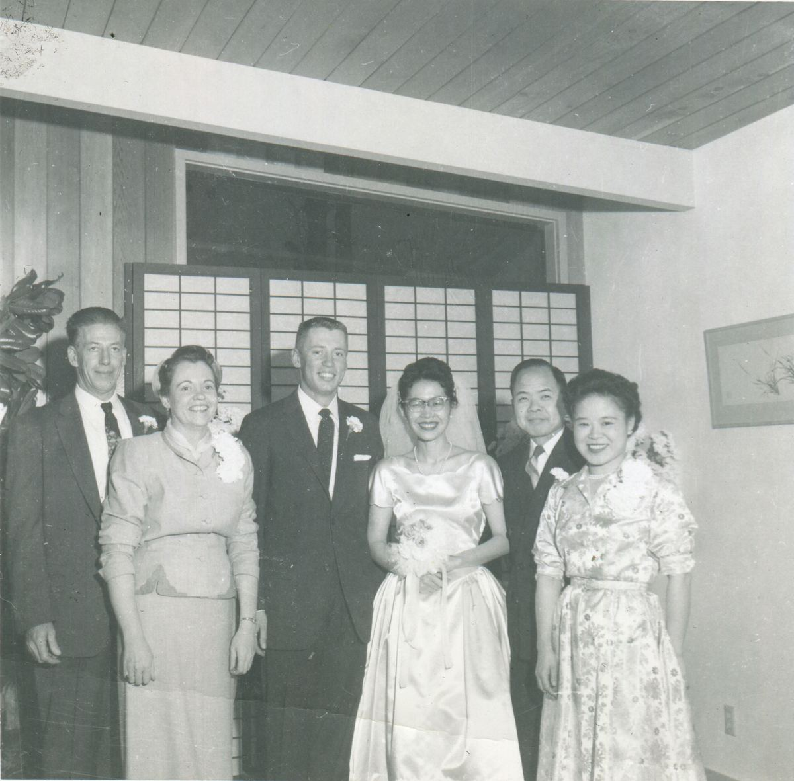
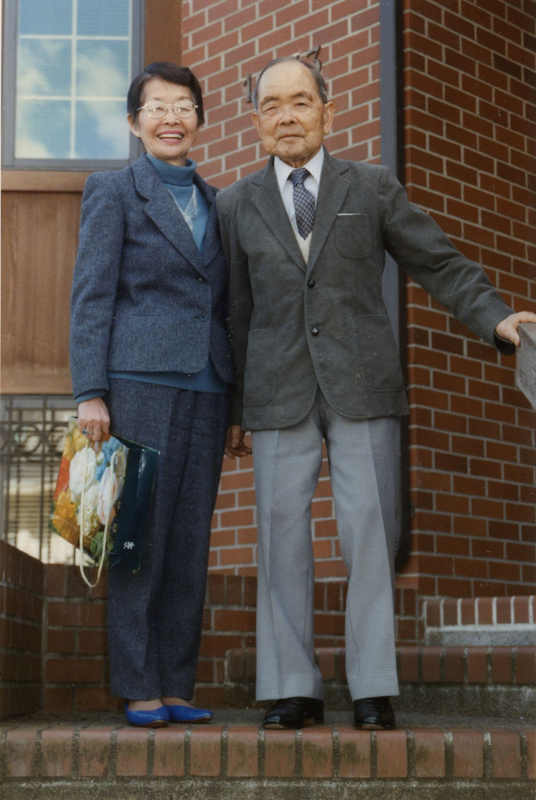
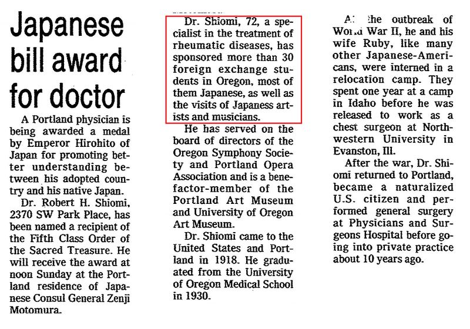

アメリカ日系一世 ロバート汐見の足跡（7）
社会貢献 — 留学生支援
ロバート汐見は継続的に日本人留学生を支援し、その数は30人を超えたと言う。
その留学生達も多くは鬼籍に入り詳細は判らないが、その1人は夏目漱石の孫、松岡陽子氏であった。
陽子氏は漱石の長女筆子と漱石門下の松岡譲との次女。戦後まもなくアメリカの奨学金を得て1年間オレゴン大学に留学した際にロバート汐見との知遇を得た。奨学期間が満了し帰国する直前にロバートから支援の申し出を得て留学を続け、後にオレゴン大名誉教授となった。陽子氏の著書｢漱石の孫のアメリカ｣*1に｢こちらで成功しておられる親切な一世の医学博士」の助けで留学を続けられることになったと語られている。
ロバートは陽子氏の結婚式にも父親の代役で出席*2、生涯にわたり家族ぐるみの交流を続けた（写真1、2）。ちなみに陽子氏の息子、ケン・マックレイン氏には開業前より汐見の家を応援して頂いたが、2017年7月には家族3人で汐見の家に2泊して頂き、先代からの旧交を温める僥倖に恵まれた（写真3）。ロバートの渡航百年にあたる2018年には筆者がオレゴンを訪問する計画を立てている。

結婚式。左からマックレイン氏両親、新郎・ロバートマックレイン、新婦・松岡陽子、汐見夫妻。1956年12月22日（ケン・マックレイン氏提供）

松岡陽子氏とロバート汐見。オレゴン大学付属ジョーダン・シュニッツァー美術館前で。1996年頃（ケン・マックレイン氏提供)
尚、ロバートはかの緒方貞子氏*3を｢世話した｣と懐かしく語っていた。外交官であった緒方氏の父、中村豊一氏は1932年(昭和7)10月より3年間ポートランドの領事館に駐在し*4、その間、ロバートと公私にわたる交流があったと言う*5。
当時5歳の貞子嬢は今もリベラルな教育で知られる幼稚園から高校までの一貫校、私立ケイトリン・ヒルサイド・スクール（現ケイトリン・ゲーベル・スクール）に入学したが、ロバートはその後2人の娘を同じ学校に通わせ、東京に住んでいた姪には緒方氏と同じ聖心女子大を勧める惚れ込み振りであった。さぞ聡明で魅力的な少女であった事だろう。
OREGON Encyclopedia には同校の著名な卒業生として緒方氏の名前が記載されているが、氏が実際に在籍したのは8才までのわずか3年間である。推測に過ぎないが、戦後、貞子嬢が同校に復学出来るようロバートが学籍を維持していたのかもしれない。同校に確認したところ、高校の卒業生として緒方氏（中村貞子）が記録されている事は間違い無いということである。
1976年11月25日付オレゴニアン紙（写真3）によると、ロバート汐見は長年にわたる留学生や文化団体への支援など日米文化交流への貢献をもって叙勲を受けている。日本の身内には殆ど連絡をせず、姪である筆者の母もこの記事を見るまで知らなかった。あっさりしたものである。

*1 ｢漱石の孫のアメリカ｣ P17 松岡陽子マックレイン著 新潮社 1984年
*2 Celebration of Life: YokoMcClain.org ケン・マックレイン氏が管理する松岡陽子氏のメモリアルサイト。
*3 元国連高等弁務官、JICA特別顧問。褒め称え尽くせない偉人。知らない方はぜひググって下さい。
*4 ｢戦争の終わらないこの世界で｣ 緒方貞子著 NHK出版 2014年
*5 筆者の母談。ポートランド日本領事に提出したロバートと妻ルビー（日本名幸子）の婚姻届の受領者が中村豊一氏である。日系人の少ないポートランドで、幼い子供を持つ外交官一家が、世代が近く往診もする日本人医師と親しい関係であっても不思議ではなかろう。ちなみに大胆にもJICA経由で照会したところ、｢お名前は覚えているが何分幼い頃のことなので｣と秘書の方よりご返信を頂いた。お手数をお掛けしたことをこの場を借りてお詫び申し上げます。